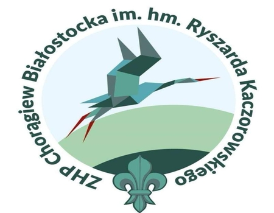

Główna
Stopnie harcerskie
Stopnie harcerskie ZHP
Stopnie harcerskie ZHR
Stopnie harcerskie SH
Chorągwie
Chorągwie ZHP
Chorągwie ZHR
Chorągwie SH
Źródła
Podkarpacka
Stołeczna
Krakowska
Łódzka
Kujawsko-Pomorska
Lubelska
Śląska
Kielecka

Mazowiecka
Wielkopolska
Białostocka
Ziemi Lubuskiej
Warmińsko-Mazurska
Gdańska
Zachodniopomorska
Dolnośląska
Opolska
--Wybierz chorągiew--
Białostocka
Dolnośląska
Gdańska
Kielecka
Krakowska
Kujawsko-Pomorska
Lubelska
Łódzka
Mazowiecka
Opolska
Podkarpacka
Stołeczna
Śląska
Warmińsko-Mazurska
Wielkopolska
Zachodniopomorska
Ziemi Lubuskiej
Lp.
Chorągiew
Liczba hufców
Rok powstania
pierwszych drużyn
Komendant
Wybrane
hufce:
Nazwa
Patron
Logo
1.
Podkarpacka
Olga i Andrzej Małkowscy
19
1910
hm.
Mariusz Bezdzietny HR
Brzozów
Krosno
Jarosław
2.
Stołeczna
Bohaterowie Warszawy
26
hm.
Katarzyna Karolak
Leszno
Ożarów
Piastów
3.
Krakowska
Tadeusz Kościuszko
22
hm.
Mariusz Siudek
Andrychów
Olkusz
Wieliczka
4.
Łódzka
Aleksander Kamiński
24
hm.
Natalia Patorska-Grzelewska
Brzeziny
Głowo
Łowicz
5.
Kujawsko-Pomorska
Mikołaj Kopernik
21
1911
hm.
Jerzy Gębara
Chojnice
Rypin
Włocławek
6.
Lubelska
Ab.
8
hm.
Tomasz Sych
Łuków
Puławy
Zamość
7.
Śląska
Harcerze Września 1939
34
hm.
Marcin Różycki
Mysłowice
Zabrze
Żywiec
8.
Kielecka
Stefan Żeromski
15
1912
hm.
Tomasz Rejmer
Kielce
Końskie
Sandomierz
9.
Mazowiecka
Władysław Broniewski
26
hm.
Cezary Supeł
Grójec
Płock
Sierpc
10.
Wielkopolska
Powstańcy Wielkopolscy 1918-19
40
hm.
Maciej Siwiak
Gniezno
Koło
Leszno
11.
Białostocka
hm.
Ryszard Kaczorowski
8
1913
hm.
Krzysztof Jakubowski
Augustów
Suwałki
Kolno
12.
Ziemi Lubuskiej
Ab.
13
1919
hm.
Bartłomiej Walkowski
Żary
Słubice
Sulęcin
13.
Warmińsko-Mazurska
Grunwald
23
hm.
Maciej Micielski
Ełk
Kętrzyn
Pisz
14.
Gdańska
Bohaterzy Ziemi Gdańskiej
19
1920
hm.
Łukasz Kochowski
Puck
Sopot
Lębork
15.
Zachodniopomorska
Ab.
12
1934
hm.
Eliza Gilewska
Sławno
Szczecinek
Stargard
16.
Dolnośląska
hm.
Stefan Mirowski
29
1945
hm.
Dorota Kołakowska
Lubań
Syców
Świdnica
17.
Opolska
Ab.
7
hm.
Łukasz Czarnecki
Brzeg
Nysa
Praszka